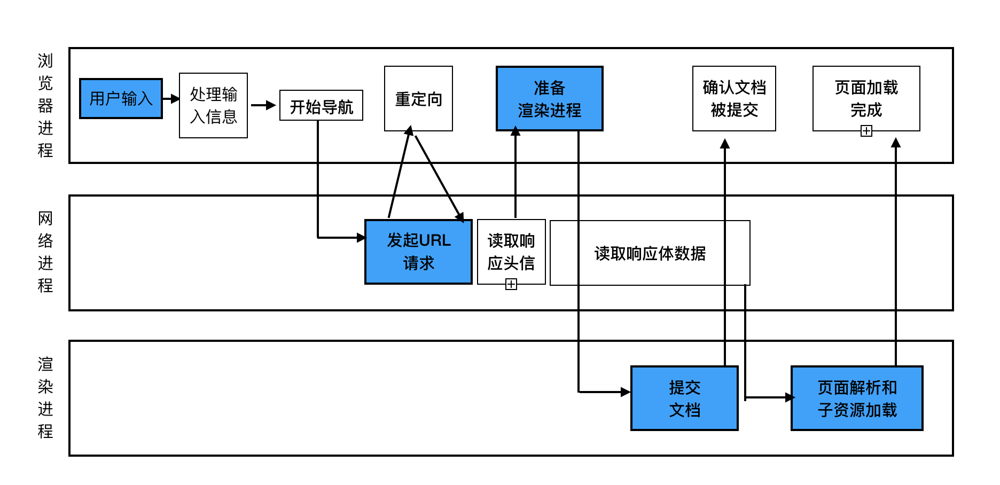
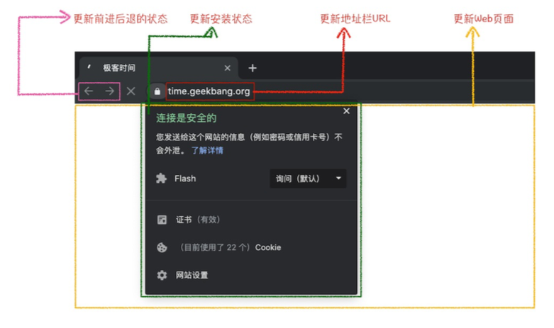

讲解HTTP请求，从输入url到页面呈现的过程.
整体流程

主要是分为以下步骤：
- 用户从输入栏输入URL
- 然后网络进程请求数据
- 浏览器进程准备渲染进程
- 渲染进程准备好后，发送消息给浏览器进程。也就是“提交文档阶段”
- 浏览器进程接收到消息后，删除旧文档。并通知渲染进程文档已提交。同时渲染进程开始渲染流程
用户输入
当用户在浏览器输入栏中输入信息时，浏览器会自动判断输入的内容是否为URL。
- 如果为搜索内容，浏览器会使用默认的搜索引擎来合成带有搜素关键字的URL。
- 如果为URL，那么浏览器会根据规则把输入内容调整为完整的URL
当用户点击搜索或敲击回车后，在当前页面即将被替换成新的页面时，浏览器还给予当前页面一次beforeunload事件的机会。该事件是用于取消导航的。这时页面还是原来的页面，因为需要等待提交文档阶段，页面内容才会被替换。
网络请求过程
页面进入资源请求过程。这时，浏览器进程会通过IPC把URL请求发送给网络进程，网络进程接收到URL请求后，会在这发起真正的URL请求流程。
- 首先，网络进程会查找本地缓存是否缓存了该资源，如果有缓存，那么直接返回。否则进入网络请求流程。第一步要进行DNS解析，获取请求域名的服务器IP地址，当然DNS解析也是有缓存的。接着如果是HTTPS请求，需要建立TLS链接。
- 接下来就是利用IP地址和服务器建立TCP链接。经过三次握手后，浏览器端会构建请求所需的请求头、请求行和请求体等信息。一并发送到服务器。
- 服务器接收到请求信息之后，会根据请求信息生成响应数据也就是响应头，响应行，响应体等。将它们发送给网络进程。等网络进程接收到了响应行和响应头后，便开始解析响应头的内容了。
响应数据类型处理
浏览器根据响应头中的Content-type判断接收到数据是哪种类型。如果是text/html。则准备渲染。
准备渲染进程
浏览器打开一个新⻚面采用的渲染进程策略就是：
- 通常情况下，打开新的⻚面都会使用单独的渲染进程;
- 如果从A⻚面打开B⻚面，且A和B都属于同一站点(相同的协议和根域名)的话，那么B⻚面复用A⻚面的渲染进程;如果是其他情况，浏览器进程则会为B创建一个新的渲染进程。
渲染进程准备好后，还没有立即进入文档解析阶段，因为此时的文档数据还在网络进程中，并没有提交给渲染进程，所以下一步就进入了提交文档阶段。
提交文档
注意这里的“文档”是指URL请求的响应体数据
- “提交文档”的消息是由浏览器进程发出的，渲染进程接收到“提交文档”的消息后，会和网络进程建立
- 传输数据的“管道”。 等文档数据传输完成之后，渲染进程会返回“确认提交”的消息给浏览器进程。
- 浏览器进程在收到“确认提交”的消息后，会更新浏览器界面状态，包括了安全状态、地址栏的URL、前 进后退的历史状态，并更新Web⻚面。

这也就解释了为什么在浏览器的地址栏里面输入了一个地址后，之前的⻚面没有立⻢消失，而是要加载一会 儿才会更新⻚面。
渲染阶段
一旦文档被提交，渲染进程便开始⻚面解析和子资源加载了，关于这个阶段的完整过程。